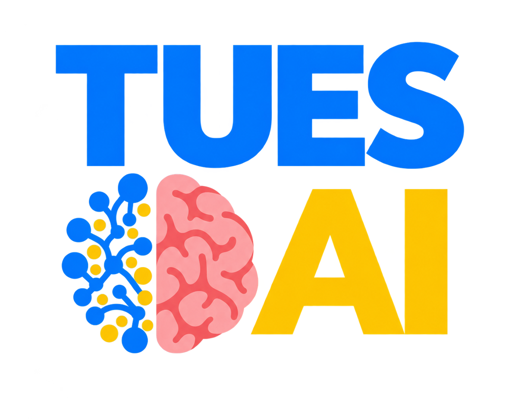
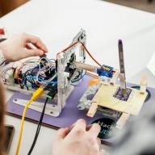
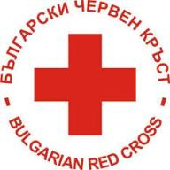
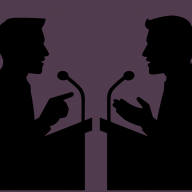
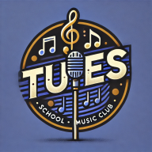

N/A
Adventure
Клуб за приключения и дейности извън училище. Организаторът планира да го съживи през тази учебна година; конкретната програма предстои да се уточни.
Александър 12В
Зали 19, 17, библиотеката и около тях
Ориентировъчно 10:00–16:00 ч. Точните часове предстои да се уточнят.
Клуб за приключения и дейности извън училище. Организаторът планира да го съживи през тази учебна година; конкретната програма предстои да се уточни.

Учим машинно обучение отвътре навън: от функции, производни, вектори и матрици до оптимизация, невронни мрежи и backpropagation. Изграждаме собствен autograd engine и модели от нулата, за да разберем математиката и кода зад тях. Четем научни статии, възпроизвеждаме идеи и правим експерименти и проекти. Срещите съчетават лекции, писане на код и дискусии.
От „работи на моята машина“ до автоматизирано и надеждно внедряване на приложения. Клубът проследява целия процес: Git отвъд add/commit/push, контейнеризация, CI/CD, изграждане и доставяне на контейнери и оркестрация. Следват по-напреднали теми като GitOps и управление на тайни. Насочен е предимно към 11. и 12. клас, за първо запознаване с тези инструменти или изчистване на разбирането преди практиката.

Клубът подготвя осмокласници за състезанието Robodays през март. Практически насочените лекции започват от нулата и въвеждат напрежение, ток, електронни компоненти и основни формули по електротехника. Участниците работят с Arduino и изграждат основа за собствени проекти до края на учебната година. Подходящ е за ученици, които искат да разберат как работи хардуерът и да направят първите си стъпки във вградените системи.
N/A

Доброволчески клуб към Българския младежки Червен кръст. Участниците се включват в акции, обучения и презентации, насочени към помощ и информиране на хората. Клубът развива работа в екип, лидерски и организационни умения, отговорност, социална ангажираност и подготовка за кризисни ситуации. Участието е свързано с конкретните доброволчески дейности, а не само с редовни сбирки.

Клубът развива комуникационни умения чрез дебати: логична аргументация, изнасяне на речи, убедителност и изразителност. Участниците тренират говорене пред публика, спокойствие и увереност, както и богат речник на български и английски. Подготвят се за различни състезателни формати и участват в състезания, където дебатират с ученици от други училища и градове и обменят опит.
Доброволческият клуб, познат преди като Интеракт, продължава под името Инициатор. Екипът уточнява състава и организацията си; подробности за инициативите и срещите предстои да бъдат добавени.
N/A
Клубът събира ученици и завършили училището за разговори за книги, литература и живота. Срещите са в кафенета и чайни в София, в спокойна и неформална атмосфера. Участниците споделят впечатления от прочетени творби, обменят идеи и откриват различни гледни точки. Развиват критическо мислене, обща култура и умения за аргументация, слушане и свободно изразяване на мнение.

Клубът свързва ученици, които свирят на инструмент, пеят или просто обичат музиката. Участниците избират песни, подготвят ги и репетират заедно в зала „The Junction“. Работят по музикални проекти и участия в училищни събития, споделят опит и развиват талантите си. Сред целите са обучение по инструмент по избор, работа с озвучителна техника, екипна координация, креативност и сценично поведение.
Does this even exists, huh?
N/A
Проект за ученически съвет, който още предстои да бъде одобрен от ръководството. Идеята е учениците да имат общо място за предложения за училището и училищната среда. Предлага се избор на представител от всяка паралелка и срещи веднъж месечно. Съветът би имал препоръчителен характер, без партии. Организаторите ще представят инициативата на панаира; тя се разглежда отделно от клубовете.